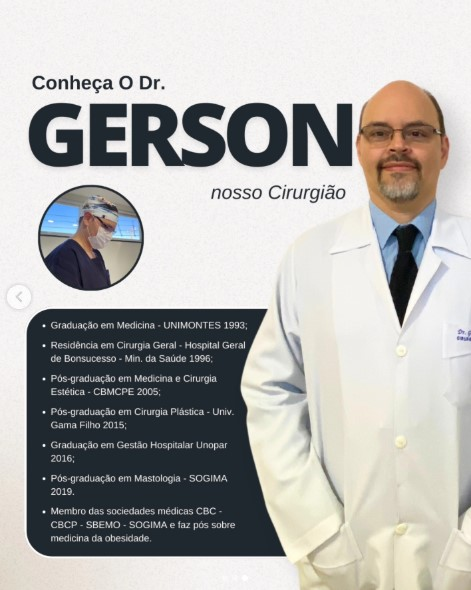
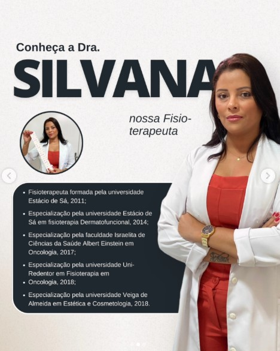

Dr. Gerson
Cirurgião.Com décadas de experiência e dedicação à cirurgia plástica, o Dr. Gerson é referência em procedimentos faciais e corporais, unindo técnica apurada e visão estética para entregar resultados naturais e harmoniosos aos seus pacientes.
- Graduação em Medicina pela Universidade Estadual de Montes Claros (1993)
- Residência Médica em Cirurgia Geral no Hospital Geral de Bonsucesso (1996)
- Pós-graduação Lato Sensu em Medicina e Cirurgia Estética pelo CBMCPE (2005)
- Pós-graduação Lato Sensu em Cirurgia Plástica pela Universidade Gama Filho (2015)
- Membro atuante das sociedades médicas: CBC, CBCP, SBEMO e SOGIMA

Dra. Silvana
Fisioterapeuta DermatofuncionalEspecialista em recuperação e tratamentos estéticos avançados, a Dra. Silvana atua na otimização de resultados pós-operatórios e em protocolos não invasivos de alta tecnologia para o cuidado integrado da pele e do corpo.
- Graduação em Fisioterapia pela Universidade Estácio de Sá (2011)
- Especialização em Fisioterapia Dermatofuncional (2014)
- Especialização em Oncologia pelo Hospital Albert Einstein (2017)
- Especialização em Estética e Cosmetologia pela Universidade Veiga de Almeida (2018)